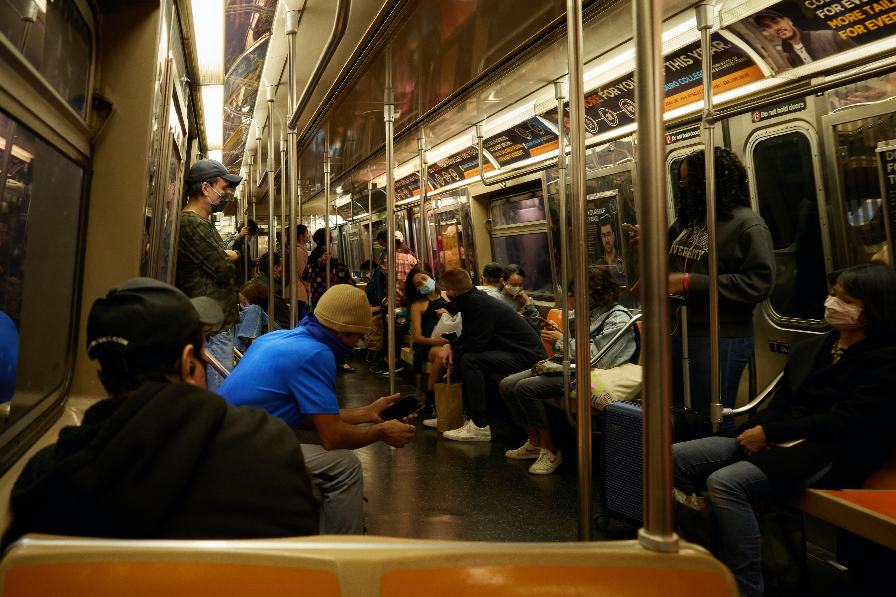

FUNDAMENTALS OF DATA NEWS
Dec. 16, 2021
POLITICS

ENVIRONMENT
Don’t Expect Gas Heating and Stoves in New York City’s new buildings

2024 and 2027 the ban goes into effect for small and large buildings respectively
CORONAVIRUS
West Village's hot nightlife might be tied to COVID spike
The West Village has become a hotspot for COVID-19 cases despite historically having lower infection rates.